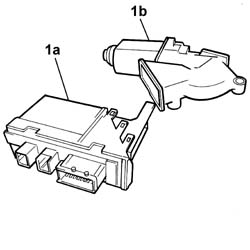

5505A42 CONTROL UNIT DIGITAL NETWORK NODE IN DRIVERS SIDE DOOR RR
- Path
- Procedures > 55 ELECTRICAL EQUIPMENT > 5505 INSTRUMENT/GAUGE ELECTRICAL CIRCUITS > 5505A MULTI-FUNCTION COMPONENTS > 5505A42 CONTROL UNIT DIGITAL NETWORK NODE IN DRIVERS SIDE DOOR RR
- Kind
- repair procedure (removal / refitting; the operation number is the code)
- Applies to
- all engines; all production periods
- Interactive page
- https://sloeber94.github.io/elrnDB-fUlss/en/#/179007525
Applies to: all engines; all production periods
 Removing
Removing
 Refitting
RefittingOp. 5530B56 BATTERY DRIP TRAY COVER - R.R.
- Disconnect the negative battery terminal.
Op. 7005E70 REFLECTOR ON FRONT DOOR PANEL - R R
Op. 7005E10 FRONT SIDE DOOR INNER PANEL - R R FOR REPLACEMENT
-

Applies to: all engines; all production periods
Refitting
Removing- Position the control unit door node on the motor and check that it is secured.
Op. 7005E10 FRONT SIDE DOOR INNER PANEL - R R FOR REPLACEMENT
Op. 7005E70 REFLECTOR ON FRONT DOOR PANEL - R R
-
Topics linked from this page (5)
- 5530B56 BATTERY DRIP TRAY COVER - R.R.
- 7005E10 FRONT SIDE DOOR INNER PANEL - R R FOR REPLACEMENT
- 7005E70 REFLECTOR ON FRONT DOOR PANEL - R R
- 7005M14 SWITCH UNIT CONTROLLING ELECTRIC WINDOWS REAR VIEW MIRRORS AND DOOR LOCK ON DRIVERS SIDE FRONT DOOR R R
- 7005M29 FRONT SIDE DOOR ELECTRICALLY OPERATED WINDOW MOTOR R R WITH DOOR PANEL-MOUNT FRAME REMOVED